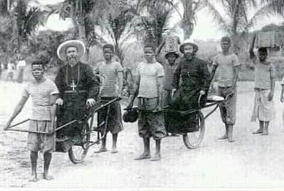
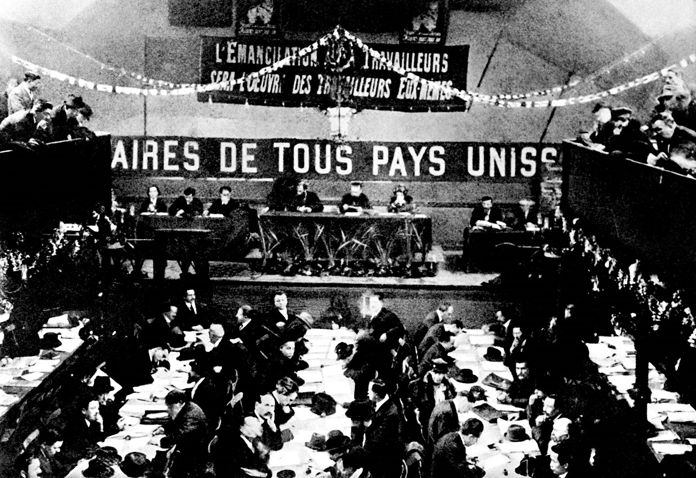
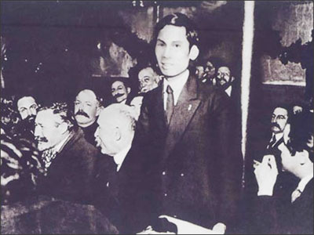
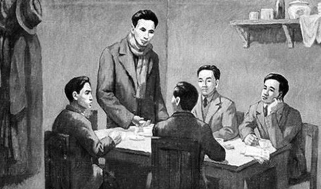
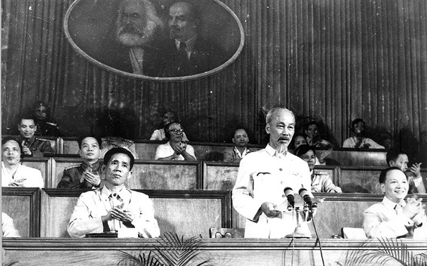
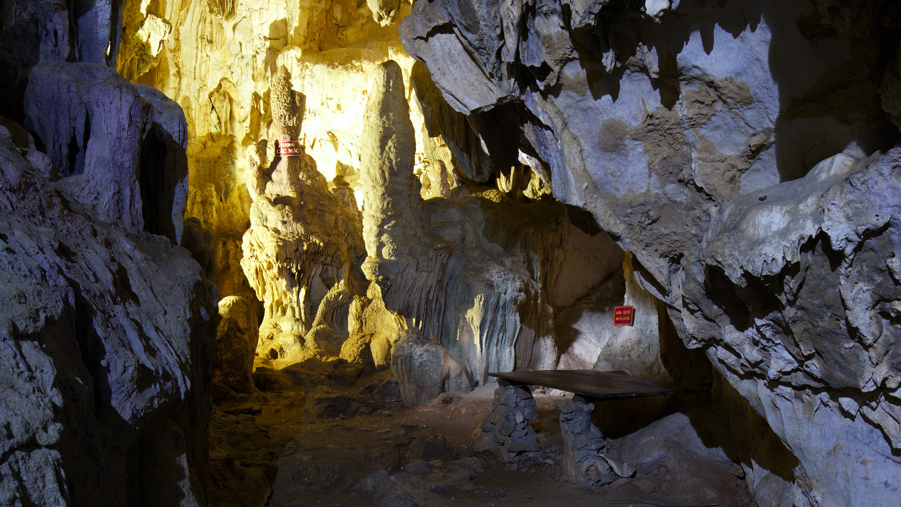
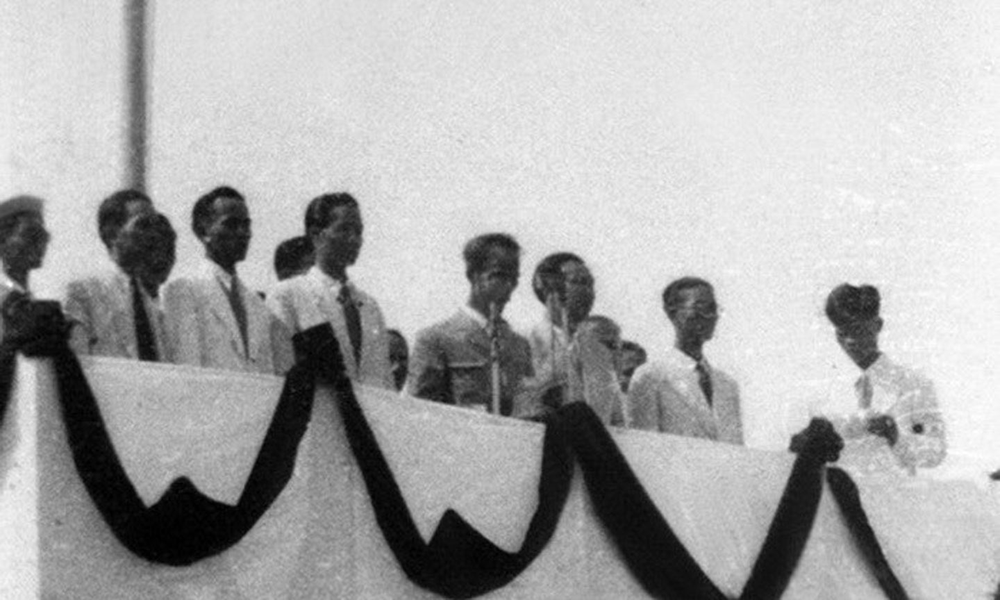

Giới thiệu
Chào mừng bạn đến với tài liệu học tập về Chủ tịch Hồ Chí Minh(nguồn: EzSu).
Phần I: Tiểu sử và Nguyên nhân
 Chân dung Chủ tịch Hồ Chí Minh( nguồn: Báo thanh niên)
Chân dung Chủ tịch Hồ Chí Minh( nguồn: Báo thanh niên)
1. Thông tin về tiểu sử ngắn của Hồ Chí Minh
Chủ tịch Hồ Chí Minh (1890–1969), tên khai sinh là Nguyễn Sinh Cung, là lãnh tụ vĩ đại của dân tộc Việt Nam. Sinh ngày 19/5/1890 tại Nghệ An, Người ra đi tìm đường cứu nước năm 1911, sáng lập Đảng Cộng sản Việt Nam, lãnh đạo giành độc lập (1945) và là Chủ tịch nước đầu tiên (1945–1969), được UNESCO vinh danh Anh hùng giải phóng dân tộc, Danh nhân văn hóa kiệt xuất.
- Tên gọi: Nguyễn Sinh Cung (thời nhỏ), Nguyễn Tất Thành (khi đi học), Nguyễn Ái Quốc (hoạt động cách mạng).
- Ngày sinh: 19/5/1890.
- Quê quán: Làng Hoàng Trù (quê ngoại) và làng Sen (quê nội), xã Kim Liên, huyện Nam Đàn, tỉnh Nghệ An
- Gia đình: Cha là Nguyễn Sinh Sắc, mẹ là Hoàng Thị Loan. Xuất thân trong gia đình nhà nho yêu nước.
- 1911: Từ cảng Nhà Rồng, Người rời Việt Nam sang phương Tây tìm đường cứu nước.
- 1919: Lấy tên Nguyễn Ái Quốc, gửi bản Yêu sách đòi quyền tự do cho nhân dân Việt Nam tại Hội nghị Versailles.
- 1920: Tham gia sáng lập Đảng Cộng sản Pháp, trở thành người cộng sản Việt Nam đầu tiên.
- 1925: Thành lập Hội Việt Nam Cách mạng Thanh niên tại Quảng Châu (Trung Quốc).
- 1930: Hợp nhất các tổ chức cộng sản, thành lập Đảng Cộng sản Việt Nam.
- 1941: Về nước, xây dựng căn cứ địa cách mạng, thành lập Việt Nam Độc lập Đồng minh (Việt Minh).
- 1945: Lãnh đạo Cách mạng Tháng Tám thành công. Ngày 2/9/1945, đọc Tuyên ngôn Độc lập, khai sinh nước Việt Nam Dân chủ Cộng hòa.
- 1945–1969: Trên cương vị Chủ tịch nước, Người lãnh đạo nhân dân kháng chiến chống Pháp và chống Mỹ.
- 1969: Qua đời ngày 2/9/1969 tại Hà Nội.
- Năm 1990, nhân kỷ niệm 100 năm ngày sinh, UNESCO tôn vinh Hồ Chí Minh là "Anh hùng giải phóng dân tộc và Nhà văn hóa kiệt xuất của Việt Nam".
- Tư tưởng Hồ Chí Minh là tài sản tinh thần quý báu của Đảng và dân tộc Việt Nam.
3. Nguyên nhân Bác Hồ quyết định ra đi tìm đường cứu nước
Nguyên nhân Người quyết định ra đi tìm đường cứu nước: Nguyễn Tất Thành sinh ra và lớn lên trong hoàn cảnh nước nhà rơi vào tay thực dân Pháp. Nhiều cuộc khởi nghĩa và phong trào đấu tranh nổ ra liên tiếp nhưng đều thất bại. Đau xót trước cảnh mất nước, nhà tan. Trước sự thất bại của các phong trào yêu nước đầu thế kỷ, sự đàn áp, bóc lột của thực dân Pháp đã thôi thúc Nguyễn Tất Thành ra đi tìm đường cứu nước mới dân tộc.
Phần I (Tiếp): Bối cảnh Việt Nam cuối thế kỉ XIX - đầu XX

Cảnh lao động khổ sai của công nhân Việt Nam thời Pháp thuộc( nguồn: sachhiem.net)a. Bối cảnh Chính trị: Sự sụp đổ của chế độ phong kiến
Sau khi thực dân Pháp nổ súng xâm lược tại Đà Nẵng (1858), triều đình nhà Nguyễn dần suy yếu và từng bước đầu hàng qua các bản hiệp ước (Nhâm Tuất, Giáp Tuất, Hác-măng, Pa-tơ-nốt).
- Chính quyền thực dân: Đến năm 1884, Việt Nam hoàn toàn trở thành thuộc địa của Pháp. Pháp thành lập Liên bang Đông Dương, xóa tên Việt Nam trên bản đồ thế giới, chia nước ta thành ba kỳ (Bắc Kỳ, Trung Kỳ, Nam Kỳ) với ba chế độ cai trị khác nhau.
- Sự bất lực của nhà Nguyễn: Triều đình chỉ còn là bù nhìn, làm tay sai cho Pháp. Các phong trào kháng chiến tự phát của nhân dân và các sĩ phu yêu nước (như phong trào Cần Vương) lần lượt thất bại do thiếu đường lối đúng đắn.
b. Bối cảnh Kinh tế: Cuộc khai thác thuộc địa lần thứ nhất (1897 - 1914)
Sau khi bình định về quân sự, thực dân Pháp bắt đầu khai thác kinh tế quy mô lớn để bù đắp chi phí xâm lược:
- Nông nghiệp: Pháp đẩy mạnh cướp đoạt ruộng đất, thiết lập các đồn điền cao su, cà phê, chè. Nông dân mất đất, phải đi làm thuê hoặc chịu sưu cao thuế nặng.
- Công nghiệp & Giao thông: Tập trung khai thác khoáng sản (than đá ở Quảng Ninh, thiếc, kẽm...) và xây dựng hệ thống đường sắt, đường bộ để phục vụ vận chuyển tài nguyên về Pháp.
- Mục tiêu: Biến Việt Nam thành thị trường tiêu thụ hàng hóa ế ẩm của Pháp và là nơi cung cấp nguyên liệu rẻ mạt.
c. Biến đổi Xã hội: Sự xuất hiện của các giai cấp mới
Cơ cấu xã hội Việt Nam thay đổi sâu sắc do tác động của cuộc khai thác kinh tế:
- Giai cấp cũ:
- Địa chủ: Phân hóa thành địa chủ yêu nước và địa chủ phong kiến tay sai.
- Nông dân: Chiếm đa số, bị áp bức nặng nề nhất, là lực lượng cách mạng đông đảo.
- Giai cấp và tầng lớp mới:
- Công nhân: Ra đời gắn liền với các hầm mỏ, đồn điền và nhà máy. Đây là giai cấp tiên phong sau này.
- Tư sản dân tộc: Bị tư bản Pháp chèn ép nên có tinh thần dân tộc.
- Tiểu tư sản thành thị: Bao gồm học sinh, sinh viên, trí thức, tiểu thương... nhạy bén với thời cuộc và các tư tưởng mới từ bên ngoài.
d. Sự bế tắc về đường lối cứu nước
Đầu thế kỷ XX, các sĩ phu yêu nước tiến bộ (như Phan Bội Châu, Phan Châu Trinh) đã nhận ra sự lạc hậu của tư tưởng phong kiến và hướng về con đường dân chủ tư sản (như Nhật Bản hay Pháp):
- Xu hướng bạo động (Phan Bội Châu): Dựa vào Nhật để đánh Pháp (phong trào Đông Du) nhưng thất bại vì Nhật bắt tay với Pháp.
- Xu hướng cải cách (Phan Châu Trinh): Muốn dựa vào Pháp để duy tân, nâng cao dân trí nhưng cũng không thành công vì bản chất thực dân không thay đổi.
Phần II & III: Rời Bến Nhà Rồng và Hành trình 3 Châu lục

Bến cảng Nhà Rồng (Sài Gòn) (nguồn: báo Hà Nội Mới)Sự kiện Bác Hồ rời bến Nhà Rồng và mục tiêu ban đầu
- Thời gian: Ngày 5 tháng 6 năm 1911.
- Địa điểm: Bến cảng Nhà Rồng, Sài Gòn (nay là Bảo tàng Hồ Chí Minh - Chi nhánh TP. HCM).
- Nhân vật: Chàng thanh niên Nguyễn Tất Thành (lúc đó 21 tuổi) với cái tên mới là Văn Ba.
- Hành động: Người xin làm phụ bếp trên con tàu buôn Đô đốc Latouche-Tréville của hãng vận tải Hợp nhất (Pháp) để bắt đầu hành trình sang phương Tây.
Khác với các bậc tiền bối như Phan Bội Châu (hướng về phương Đông - Nhật Bản) hay Phan Châu Trinh (muốn dựa vào Pháp để cải cách), mục tiêu của Nguyễn Tất Thành mang tính thực tiễn và độc lập rất cao:
Tìm hiểu bản chất của kẻ thù: Người muốn đến tận "sào huyệt" của thực dân Pháp để tìm hiểu xem: Tại sao nước Pháp lại giàu mạnh? Đằng sau những từ ngữ hoa mỹ như "Tự do - Bình đẳng - Bác ái" mà thực dân Pháp rêu rao là gì? Người từng nói: "Tôi muốn đi ra ngoài, xem nước Pháp và các nước khác. Sau khi xem xét họ làm như thế nào, tôi sẽ trở về giúp đồng bào chúng ta."
Tìm kiếm một con đường mới: Người nhận thấy các phong trào cứu nước trước đó (Cần Vương, Đông Du, Duy Tân) đều thất bại vì chưa có đường lối đúng đắn. Mục tiêu của Người là khảo sát các cuộc cách mạng trên thế giới (như Cách mạng Mỹ 1776, Cách mạng Pháp 1789) để xem có thể áp dụng gì cho Việt Nam.
Xác định lực lượng và đồng minh: Người muốn tìm hiểu xem ở các nước tư bản, người dân lao động sống ra sao, họ có bị áp bức giống người dân Việt Nam không, từ đó tìm kiếm những người bạn đồng hành thực sự cho cuộc đấu tranh giành độc lập.
Hành trình qua các quốc gia
Trên con tàu Đô đốc Latouche-Tréville, Bác đã ghé qua nhiều cảng biển ở Bắc Phi và Tây Phi như Ai Cập, Algérie, Tunisia, Senegal, Guinea, Congo...
- Công việc & Cuộc sống: Người làm phụ bếp trên tàu, tận mắt chứng kiến cuộc sống khổ cực của những người dân phu phen, bốc vác tại các bến cảng.
- Trải nghiệm thực tế: Tại Senegal, khi chứng kiến cảnh những người da đen bị sóng cuốn trôi nhưng thực dân Pháp không hề cứu giúp, Người đã vô cùng xúc động.
- Nhận thức: Người rút ra kết luận quan trọng: Ở đâu bọn thực dân cũng tàn bạo, độc ác và ở đâu những người lao động nghèo khổ cũng là bạn bè của nhau.
 Tượng Nữ thần Tự do tại Mỹ - nơi Người dừng chân khảo sát(nguồn: Ảnh: vi.wikipedia.org)
Tượng Nữ thần Tự do tại Mỹ - nơi Người dừng chân khảo sát(nguồn: Ảnh: vi.wikipedia.org)
Khoảng cuối năm 1912, Người sang Hoa Kỳ, dừng chân tại New York và Boston, sau đó có thời gian ở Brazil và Uruguay.
- Công việc & Cuộc sống: Người làm thuê, làm vườn và nhiều công việc chân tay khác để kiếm sống.
- Trải nghiệm thực tế: Người đến thăm tượng Nữ thần Tự do nhưng không chỉ nhìn vẻ bề ngoài; Người viết: "Ánh sáng trên đầu tượng Nữ thần Tự do tỏa chiếu khắp trời xanh, nhưng dưới chân tượng Nữ thần Tự do thì người da đen đang bị áp bức". Người tìm hiểu về Tuyên ngôn Độc lập của Mỹ (1776) với những quyền cơ bản của con người.
- Nhận thức: Người nhận ra rằng đằng sau sự giàu có, hoa lệ của các nước tư bản là sự bất công đối với người lao động và sự phân biệt chủng tộc nặng nề.

Nguyễn Ái Quốc trong những năm tháng tại Pháp(nguồn: Báo Quân Đội Nhân Dân)Đây là nơi Người dừng chân lâu nhất, đi qua Anh và đặc biệt là Pháp.
- Công việc & Cuộc sống: Tại Anh: Cào tuyết, đốt lò, phụ bếp (tại khách sạn Carlton). Tại Pháp: Làm thuê cho tiệm ảnh, vẽ thuê cho các cửa hàng đồ cổ, viết báo, làm bù nhìn (cho thuê mướn nhân vật).
- Trải nghiệm thực tế: Người tham gia Công đoàn, Đảng Xã hội Pháp để tìm hiểu về các tổ chức chính trị. Gửi Bản yêu sách của nhân dân An Nam (1919) tới Hội nghị Versailles nhưng bị phớt lờ. Đọc bản Sơ thảo Luận cương của Lênin về vấn đề dân tộc và thuộc địa (1920).
- Nhận thức: Đây là giai đoạn nhận thức của Người trở nên hoàn chỉnh nhất. Từ việc chỉ muốn tìm đường cứu nước, Người đã tìm thấy Chủ nghĩa Mác - Lênin. Người nhận ra kẻ thù chung của nhân dân các nước thuộc địa chính là chủ nghĩa thực dân, và cách mạng giải phóng dân tộc phải gắn liền với cách mạng vô sản.
Phần IV: Những bước ngoặt tư tưởng năm 1920
Đây là thời điểm mang tính quyết định, đánh dấu sự chuyển biến từ chủ nghĩa yêu nước sang chủ nghĩa cộng sản.
- Tháng 7/1920, Nguyễn Ái Quốc đọc bản Sơ thảo lần thứ nhất những luận cương về vấn đề dân tộc và vấn đề thuộc địa của V.I. Lênin.
- Ý nghĩa: Bản luận cương đã giải đáp cho Người con đường giải phóng dân tộc: "Muốn cứu nước và giải phóng dân tộc không có con đường nào khác con đường cách mạng vô sản".
- Tháng 12/1920, tại Đại hội Tour (Pháp), Người đã bỏ phiếu tán thành việc gia nhập Quốc tế Cộng sản và tham gia sáng lập Đảng Cộng sản Pháp.
- Sự kiện này đánh dấu Nguyễn Ái Quốc từ một người yêu nước chân chính trở thành một chiến sĩ cộng sản quốc tế. Con đường cứu nước của dân tộc Việt Nam chính thức gắn liền với cách mạng thế giới.
Phần V: Hoạt động cách mạng (1920–1930)

Nguyễn Ái Quốc hoạt động tích cực để truyền bá chủ nghĩa Mác-Lênin(nguồn: Đảng Bộ tpHcm)Đây là giai đoạn chuẩn bị quyết liệt về cả tư tưởng và tổ chức cho sự ra đời của Đảng.
- Người đi từ Pháp sang Liên Xô (1923) để nghiên cứu thực tiễn xây dựng chủ nghĩa xã hội và làm việc tại Quốc tế Cộng sản. Điều này giúp Người tích lũy kinh nghiệm lãnh đạo phong trào công nhân toàn cầu.
- Năm 1925, tại Quảng Châu (Trung Quốc), Người thành lập Hội Việt Nam Cách mạng Thanh niên (tiền thân của Đảng). Đây là nơi đào tạo những cán bộ cốt cán đầu tiên.
- Về tư tưởng: Người truyền bá chủ nghĩa Mác – Lênin vào Việt Nam qua báo Thanh niên và tác phẩm Đường Kách mệnh (1927).
- Về tổ chức: Xây dựng hệ thống cơ sở cách mạng trong nước, thúc đẩy phong trào công nhân và phong trào yêu nước phát triển mạnh mẽ theo khuynh hướng vô sản.
Phần VI: Sự kiện thành lập Đảng Cộng sản Việt Nam (1930)

Hội nghị thành lập Đảng năm 1930(nguồn: www.vwu.vn)1. Hoàn cảnh ra đời
Cuối những năm 1920, phong trào yêu nước và phong trào công nhân ở Việt Nam phát triển mạnh. Tuy nhiên, lúc này lại tồn tại 3 tổ chức cộng sản riêng rẽ:
- Đông Dương Cộng sản Đảng
- An Nam Cộng sản Đảng
- Đông Dương Cộng sản Liên đoàn
--> Điều này gây chia rẽ lực lượng, cần có một tổ chức thống nhất.
2. Vai trò của Bác Hồ
Hồ Chí Minh (lúc đó hoạt động với tên Nguyễn Ái Quốc) đã:
- Nhận thấy cần thống nhất các tổ chức cộng sản
- Triệu tập hội nghị hợp nhất
3. Sự kiện thành lập
- Thời gian: 3/2/1930
- Địa điểm: Hồng Kông
- Nội dung chính: Hợp nhất các tổ chức cộng sản; Thành lập Đảng Cộng sản Việt Nam; Thông qua các văn kiện quan trọng như: Cương lĩnh chính trị đầu tiên, Điều lệ Đảng
4. Nội dung Cương lĩnh chính trị đầu tiên
Do Hồ Chí Minh soạn thảo, xác định:
- Nhiệm vụ: đánh đổ đế quốc và phong kiến
- Mục tiêu: làm cho Việt Nam độc lập
- Lực lượng: công nhân, nông dân là chủ lực
- Gắn cách mạng Việt Nam với cách mạng thế giới
5. Ý nghĩa lịch sử
- Là bước ngoặt vĩ đại của cách mạng Việt Nam
- Chấm dứt tình trạng khủng hoảng về đường lối và lãnh đạo
- Khẳng định vai trò lãnh đạo của giai cấp công nhân
- Mở ra con đường đúng đắn cho cách mạng Việt Nam
Phần VII: Quá trình trở về lãnh đạo cách mạng (1941)

Khu di tích Hang Pác Bó - Nơi Bác về nước làm việc(nguồn: wikipedia)1. Hoàn cảnh trở về
Sau hơn 30 năm hoạt động ở nước ngoài để tìm đường cứu nước, Bác quyết định trở về Việt Nam. Thời điểm này:
- Chiến tranh thế giới thứ hai đang diễn ra.
- Thực dân Pháp suy yếu, phát xít Nhật tiến vào Đông Dương → tình hình chính trị rối ren.
- Đây là cơ hội thuận lợi để thúc đẩy cách mạng giải phóng dân tộc.
2. Sự kiện trở về (1941)
- Ngày 28/1/1941, Bác Hồ về nước sau 30 năm xa Tổ quốc.
- Địa điểm: Pác Bó (Cao Bằng).
- Bác trực tiếp lãnh đạo phong trào cách mạng trong nước.
3. Hoạt động lãnh đạo quan trọng
Sau khi về nước, Bác đã:
- Thành lập mặt trận: Tháng 5/1941, Bác chủ trì Hội nghị Trung ương 8. Thành lập Mặt trận Việt Minh → Tập hợp toàn dân đoàn kết chống Pháp – Nhật.
- Xác định nhiệm vụ cách mạng: Đặt nhiệm vụ giải phóng dân tộc lên hàng đầu. Tạm gác các vấn đề khác (ruộng đất, giai cấp…) để tập trung chống ngoại xâm.
- Xây dựng lực lượng: Phát triển căn cứ địa cách mạng ở Cao Bằng. Chuẩn bị lực lượng chính trị và vũ trang cho khởi nghĩa.
4. Ý nghĩa lịch sử
- Đánh dấu bước chuyển quan trọng của cách mạng Việt Nam.
- Mở đường cho thắng lợi của Cách mạng tháng Tám 1945.
- Khẳng định vai trò lãnh đạo trực tiếp của Bác Hồ trong nước.
Phần VIII & IX: Cách mạng tháng Tám và Ý nghĩa

Bác đọc Tuyên ngôn Độc lập tại Quảng trường Ba Đình (2/9/1945)(nguồn: Báo Đồng Tháp)Phần VIII: Thành quả của cách mạng tháng tám và độc lập dân tộc
Cách mạng tháng Tám 1945 đã lật đổ ách thống trị cũ, giành chính quyền về tay nhân dân và thành lập nước Việt Nam Dân chủ Cộng hòa, mở ra kỷ nguyên độc lập dân tộc, tự do cho đất nước.
Phần IX: Ý nghĩa và bài học
Cách mạng tháng Tám năm 1945 là một sự kiện lịch sử vĩ đại của dân tộc Việt Nam. Thắng lợi của Cách mạng tháng Tám 1945 đã mở ra kỷ nguyên mới – kỷ nguyên độc lập, tự do, đưa nhân dân ta từ thân phận nô lệ trở thành người làm chủ đất nước. Đồng thời, cách mạng còn khẳng định vai trò lãnh đạo đúng đắn của Hồ Chí Minh và Đảng. Từ đó, để lại nhiều bài học quý giá như phải có đường lối đúng đắn, phát huy sức mạnh đại đoàn kết toàn dân, biết nắm bắt thời cơ và chuẩn bị lực lượng chu đáo.